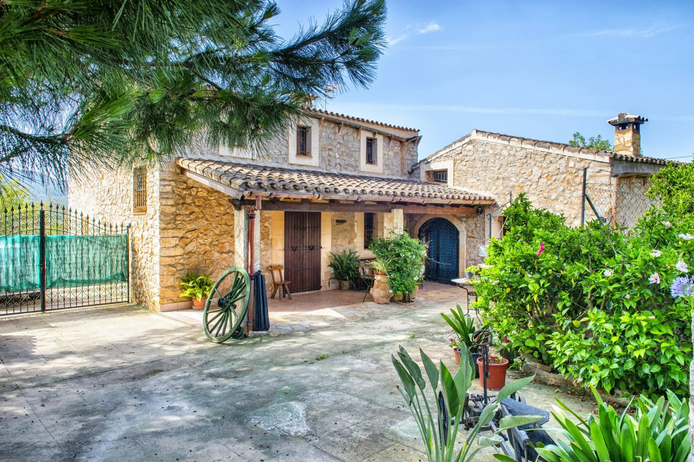

€715.000
Sant Llorenç des Cardassar / San Lorenzo · Mallorca · Spain
Preferred east-island Sant Llorenç pocket: full exposed natural-stone facade with terracotta roofs, covered porch on stone pillars, wagon-wheel rustic details, and interiors with exposed beams, sandstone arches, terracotta floors and a massive stone hearth with modern stove - charming old-Mallorca character mixed with habitable comfort, not sleek new-build. Gallery confirms a finished private rectangular in-ground pool (9×4.5 m in listing body; not communal, not pool-possible). About 377 m² built on ~15,000 m² fenced plot with oil heating, two fireplaces, well water and mains electricity. At €715k it undercuts board peers sant-llorenc-stone (€799.9k Gest) and sant-llorenc-1891 (€735k E&V) while offering more built area and clear stone-beam character.
Opened 21 Sep 2026 on Riera & Taylor RT5752. Body asking price €715.000 verified (not the €150k chrome filter buckets). Features list includes Private pool. Specs: 5 bed / 2 bath / 377 m² housing / ~15,000 m² land / 50 m² terrace. Distinct from board sant-llorenc-stone (Gest 05lf029 €799.9k) and sant-llorenc-1891 (E&V W-02P3LP €735k). Ref 5752 and URL not in existing ids/refs/urls. Habitable now.
Open listing